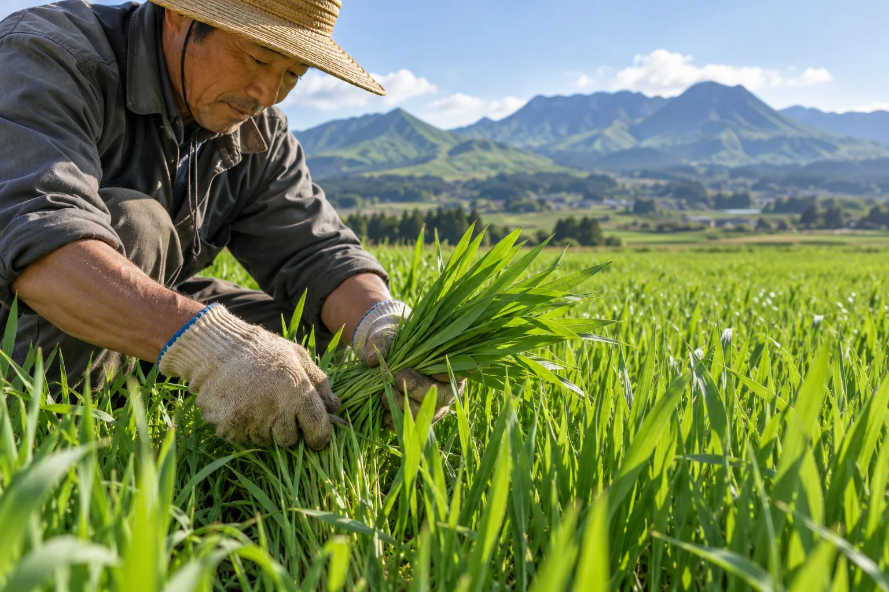
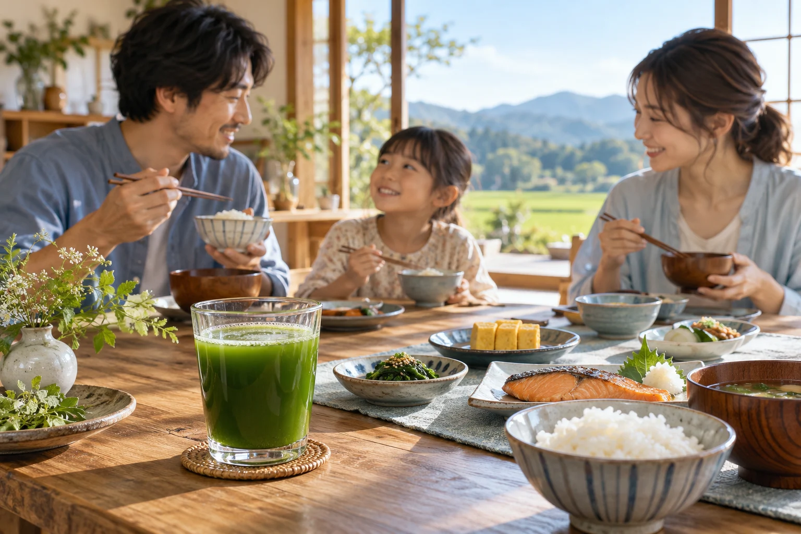

自社農園から、まっすぐに
阿蘇郡の自社農園と加工場。原料の生産から加工までを自社で行うメーカーです。
FROM ASO, TO YOUR TABLE.
熊本・阿蘇の家族農園からまずは、いつもの一杯から。
10包 980円税込・送料無料／1回限り
A FARMER'S LETTER
野菜が足りない気がする日。
手軽に何かを足したい日。
わたしたちが届けたいのは、
阿蘇の畑と食卓をつなぐ青汁です。
大げさな約束よりも、育てるところから。
味の好みは人それぞれ。だから、まず10包。
ROOTED IN OUR LAND
阿蘇郡の自社農園と加工場。原料の生産から加工までを自社で行うメーカーです。
大麦若葉の一番刈りを使用する商品設定。栽培記録や製造ロットを確かめられる運用を本番前に整えます。
お試しセットは定期購入ではありません。味や暮らしとの相性をゆっくり確かめてください。
ふるさと納税の寄付件数という架空設定です。健康効果や品質の優位性を示す数値ではありません。
THE JOURNEY OF A CUP


大切にしているのは、原料と向き合うこと。一番刈りの若葉を選ぶという、農園のものづくりの出発点です。
加工まで自社で行う体制。食品としての表示や衛生管理の記録も、製品と一緒に整えていきます。
いつもの朝食に一杯。食品として、食事全体のバランスを大切にしながらお楽しみください。
農園・加工・食卓の写真は生成イメージです。
大麦若葉青汁お試しセット10包・1セット980円（税込）、送料無料。1回限りの購入で、自動で定期購入に切り替わりません。モデル条件：お一人さま初回1セット、カード決済・注文時払い、5営業日以内に発送。通常商品は30包3,980円、定期は30包3,580円（税込）という商品設定ですが、このページでは販売しません。内容量（g）、原材料の確定表示・栄養成分・賞味期限は本番前に確認が必要です。
HOW IT WORKS
初回限定のお試しセット。送料も含めて980円です。
1回限りのお届けであることを、確認画面でも表示します。
本番では商品ラベルに沿ってお召し上がりください。このデモでは発送しません。
QUESTIONS
いいえ。青汁10包を1回だけお届けするお試しセットです。自動で定期購入へ移行したり、次の商品が届いたりすることはありません。
熊本県阿蘇郡の自社農園で栽培し、収穫から加工まで自社で行う商品設定です。写真は生成したイメージです。
認証取得前という設定です。「有機」「オーガニック」としての販売表示は行っていません。栽培・農薬使用の記録は本番前の確認事項です。
水でよく混ぜてお召し上がりください。牛乳や豆乳を使う場合は原材料とアレルギー情報をご確認ください。具体的な水量・1日量は製品表示での確定が必要です。
草の香りや味の感じ方には個人差があります。まずは10包のお試しで、ご自身の食卓に合うか確かめるご提案です。
食品ですが、通院中・服薬中・妊娠授乳中の方は、原材料を確認して医師や薬剤師にご相談ください。病気の予防や治療を目的とする商品ではありません。
YOUR NEXT STEP
10包・送料無料。実際の購入・予約・資料送信は行わないデモです。
実在する個人情報は入力しないでください。
※このページはLP制作会社のデザインサンプルです。掲載の会社・人物・数値はすべて架空です。